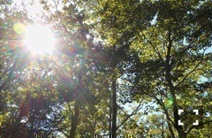
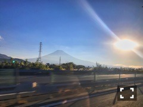

| 2016/11 10 Thu | 斎藤ちはる 初ミリオン。 |
ちはるーむへようこそ。
16thシングル「サヨナラの意味」
出荷枚数が100万枚を超えましたヽ(；；)丿
初ミリオンです！！
なんて嬉しいのだろう...
皆さん本当に、いつも支えてくださって
応援してくださってありがとうございます。
初ミリオンを16thで
達成する事ができてよかった。
ななみんが安心して卒業できるようになれたかな。
私達も胸を張って背中を押せる気がする。
でもインタビューで玲香が言っていたように
まだまだ通過点だと思うので、
これからも望みは高く、
一歩一歩前へ進んでいきたいと思います。
ブランコのMV撮影の時の、1期生。
メンバーにもいつも支えられている。
素敵な仲間達です。
これからも宜しくね\( ˆ ˆ )/
-------------------------♡
#chihashot
今日は太陽の写真(﹡ˆ ˆ﹡)

木々から覗く太陽の光。
本当綺麗！
光の輪っかが見えるほど綺麗に撮れるのは
やはりミラーレスカメラだから( ¨̮ )

これは富士急での公開収録帰りに
バスの中で急いで撮った写真。
ミラーレスじゃなくて
携帯で撮ったのだけど
夕陽と富士山と線路のバランスが
綺麗に撮れてよかった◎
-------------------------♡
♬ ChihaMusic
「笑顔」back numberさん
笑顔という曲名だから
明るい曲なのかな〜と一見思ってしまうけど
実は切なくて寂しい。
この笑顔が見れなくなる前に
伝えたい事は伝えなきゃ。という
切ないけど強い意志を感じる。
"絵にも歌にも ならない毎日の中で
募った 言葉にならない言葉は
言葉にしなくちゃ 目には見えないものだから
ここから君がいなくならないうちに"
言葉に出さないと何も伝わらないもんね。
あの時こう言えば良かったって
私友達だけじゃなく仕事でも思ってしまう。
後悔しないように毎日生きなきゃね。
今日師走の寒さだっていうのを聞いたので
完全防備で外に出たら
逆に暖かすぎて、じんわり汗かいてしまった...
体温調節が難しいよう。
おやすみ〜
斎藤ちはる